ホーマン遷移と、3次元の壁
教科書に出てくるいちばん安い遷移が、本物の太陽系ではそのまま使えません。 地球から木星へ行く場合を例に、何が起きているのかを見ていきます。 ポークチョップ図の谷が2つに割れる理由も、ここに繋がっています。
まず、教科書のホーマン遷移
内側の円軌道から外側の円軌道へ移る、いちばん安い方法です。 両方の軌道に内接する楕円に乗り移り、太陽のまわりをちょうど半周して到着します。
安く済むのは、出発でも到着でも速度の向きが揃っているからです。 地球は秒速 29.78 km で回っているので、その勢いに真っ直ぐ足すのがいちばん無駄がありません。 斜めに出ると、横向きの成分は距離を稼ぐのに使われず捨てることになります。
木星まではこれで C3 77.3 km²/s²、997日。 チュートリアル④で木星へ直行したときの C3 80.69 は、ほぼこの値です。
ところが、太陽系は平らではない
ホーマン遷移を決めているのは飛行時間ではありません。 転移角が180度であること、つまり出発点と到着点が太陽をはさんで 真向かいに来ること。これがこの遷移の定義です。
ここで効いてくるのが、木星の軌道が黄道面から 1.30度 傾いていることです。 このアプリが解いているランベール問題は、出発点・到着点・飛行時間の3つを 入れると軌道が1本決まる、というものでした。裏を返すと、 遷移する面は選べません。太陽と出発点と到着点、この3点で決まってしまいます。
では180度に近づけていくとどうなるか。出発点は黄道面の上に、到着点はそこから少し外れた ところにあります。真向かいに近づくほど、この2点を両方通る面は垂直に近づくしかありません。
2030年1月22日に出発したとして、飛行時間だけを変えたときの図です。 転移角が180度に届く直前 (966日) で遷移面は89.97度、つまりほぼ真横に立ち、 打上げエネルギーは C3 2427 まで跳ね上がります。
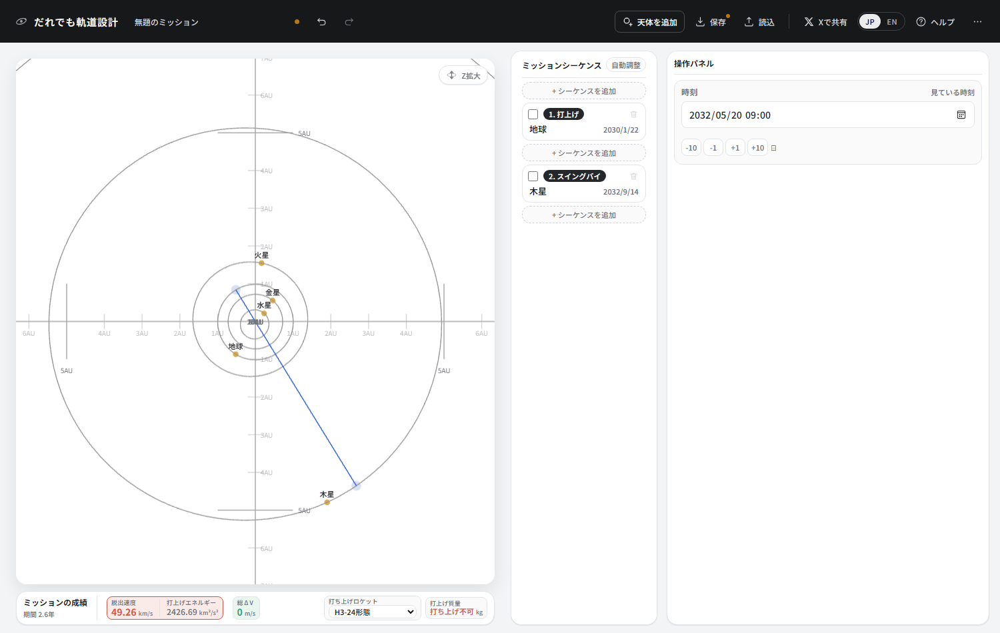
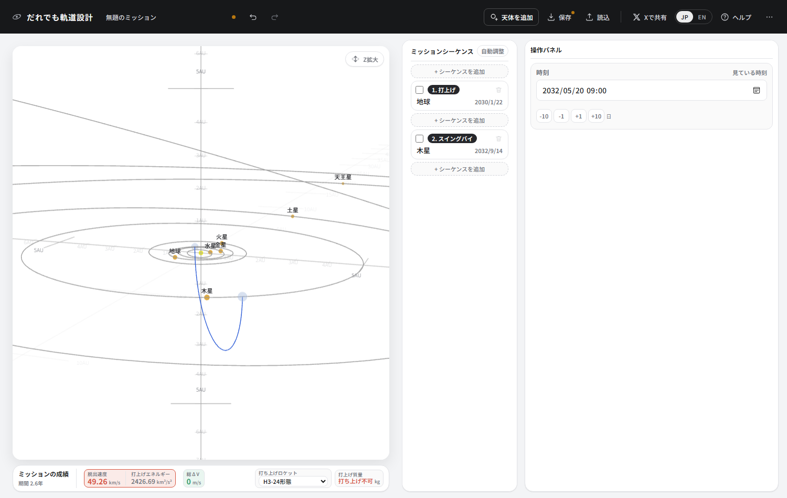
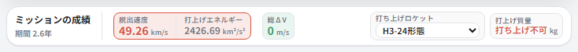
つまりホーマン遷移そのものは、3次元の太陽系では見た目からして無理があります。 教科書の C3 77.3 という値は、地球と木星が同じ平面の上で完全な円を描いている、 という前提のうえに乗ったものでした。
だから、ポークチョップ図の谷は2つに割れる
ポークチョップ図は、出発日と到着日をそれぞれ横軸・縦軸にとって、 その組み合わせで要る打上げエネルギーを色で塗った地図でした。 いま見た壁は、この地図の上では「転移角がちょうど180度になる線」として斜めに走ります。
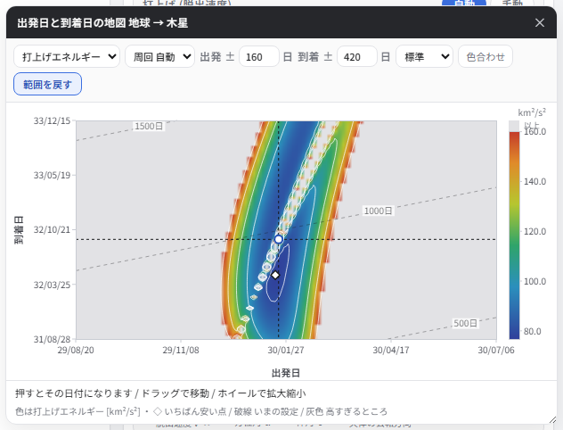
180度が使えないのなら、その手前か向こうを通るしかありません。 手前 (転移角180度未満) と向こう (180度超) は地続きにならないので、 安いところが2つの島に分かれます。同じ日に出発しても、行き方が2通りある、ということです。
| 飛行時間 | 転移角 | 遷移面の傾き | C3 | H3-24形態で | |
|---|---|---|---|---|---|
| 島① (手前) | 849 日 | 170.0° | 1.5° | 76.8 | 303 kg |
| 壁 | 966 日 | 179.5° | 90.0° | 2427 | 打ち上げ不可 |
| 島② (向こう) | 1104 日 | 192.0° | 3.4° | 81.4 | 108 kg |
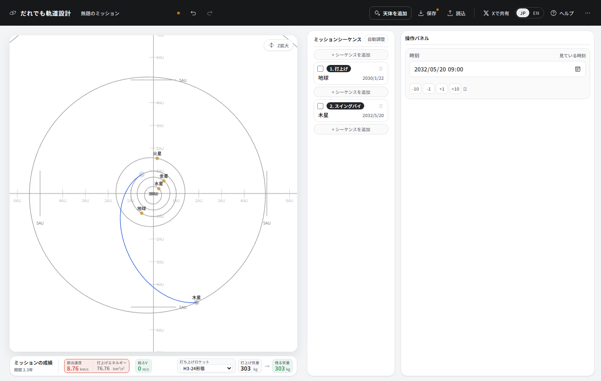
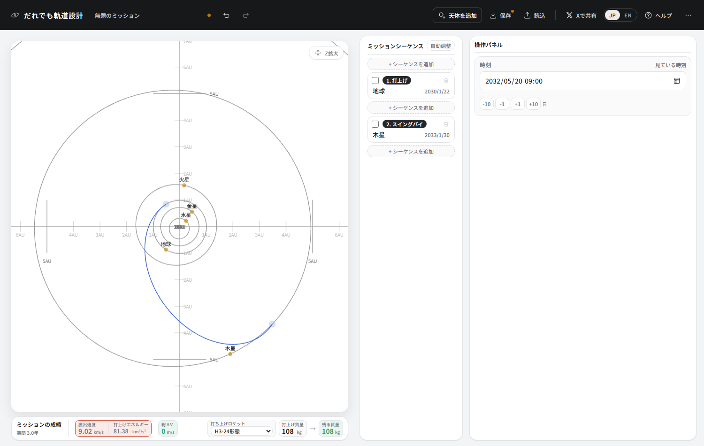
どちらを選ぶかは、質量だけでは決まりません。 島①は速く着いて質量も大きいのですが、木星に着く速さ (相対速度) は 6.30 km/s。 島②は 5.95 km/s で、周回軌道に入るならこちらの方が噴射が少なくて済みます。
面を途中で折る (ブロークンプレーン)
壁が高いのは、傾いた面へ移る代償を出発の瞬間に全部払っているからです。 面を θ だけ曲げるのに要る速度変化は 2v sin(θ/2)。速いところほど高くつきます。
| 場所 | そこでの速さ | 1度曲げるのに |
|---|---|---|
| 出発 (地球のあたり) | 38.58 km/s | 673 m/s |
| 遠日点 (木星のあたり) | 7.41 km/s | 129 m/s |
同じ1度でも 5.2倍 違います。 ならば、出発の瞬間にまとめて払うのをやめて、飛んでいる途中で払えばいい。これが ブロークンプレーン (折れた面) と呼ばれるやり方です。 1本の楕円ではなく、途中で1回噴射して2本の楕円を繋ぎます。
-
壁の日付 (2030/01/22 出発、2032/09/14 到着) のまま、打上げを手動にします。
後ろに「マヌーバ」が1つ付いてきます。これが途中の噴射です。
-
打上げの脱出速度を 8.4 km/s、方位角と仰角を 0 にします。 黄道面の中で、教科書のホーマンとほぼ同じ出方です。
-
マヌーバの日付を動かして、噴射がいちばん小さくなるところを探します。ここでは 2030/06/01。
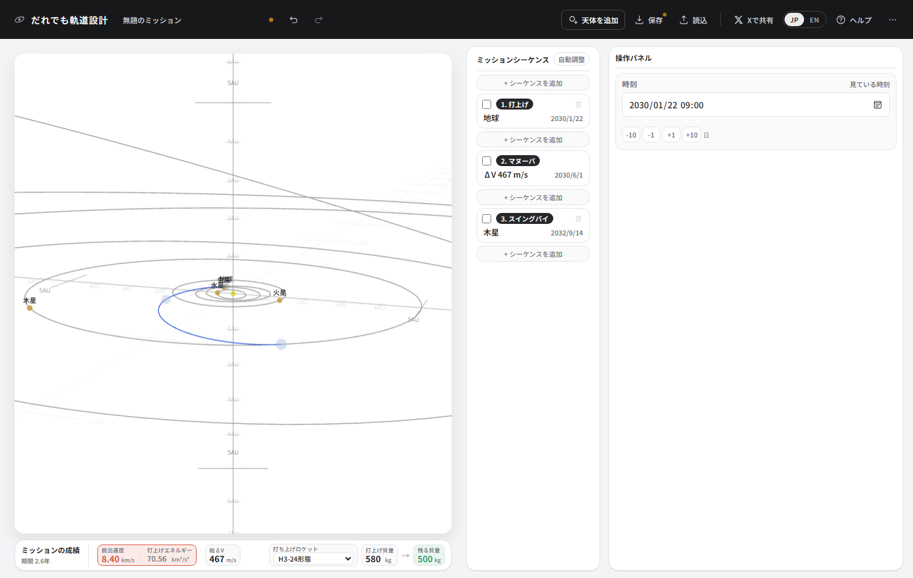
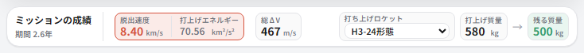
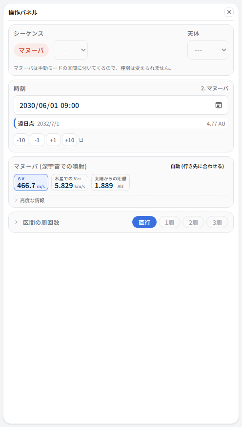
折れ目を見るには Z拡大
上の図では、どこで折れているのか分かりません。折っているのは1度ほどなので、 そのままの縮尺では線が1本に見えてしまいます。 真横から見ても同じことで、黄道面も軌道も1本の線になります。
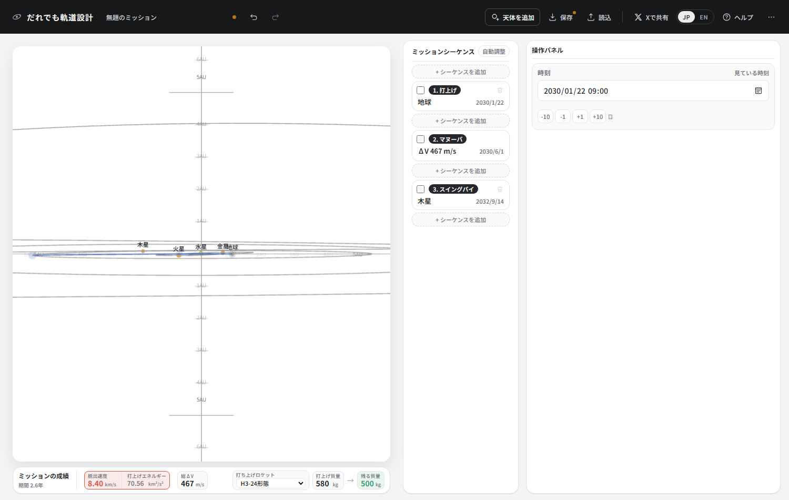
軌道図の右上の Z拡大 を押すと、 高さ方向 (黄道面からの高さ) だけが引き伸ばされます。同じ向きのまま押すと、こうなります。
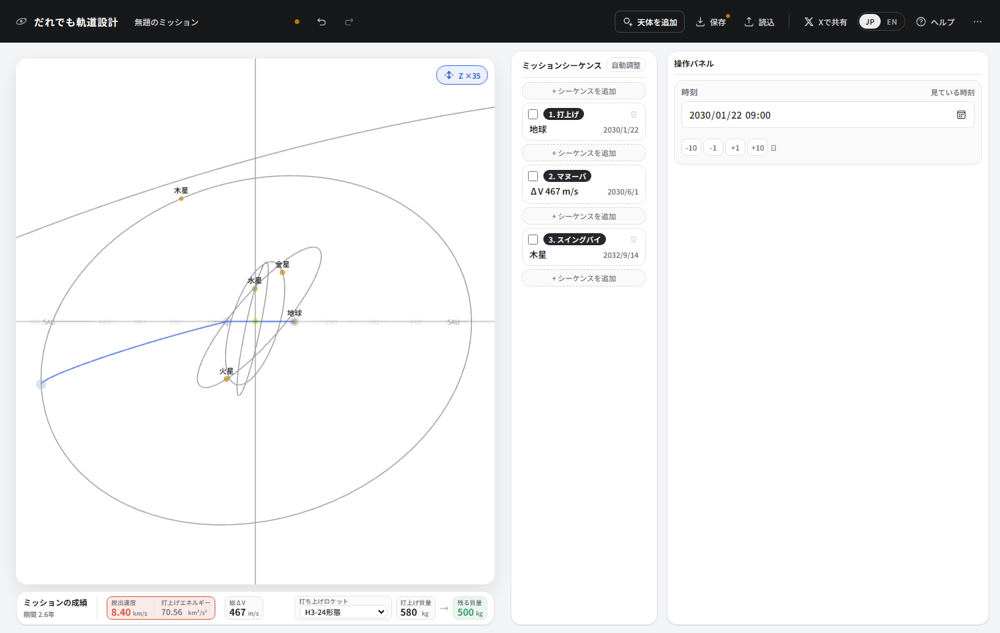
目盛りと軸のラベルも同じだけ伸びるので、伸ばしたままでも高さは正しく読めます。 キーボードの Z でも切り替えられます。
| 同じ日付で木星へ | C3 | 噴射 | 残る質量 |
|---|---|---|---|
| 1本の楕円で (壁のまんなか) | 2427 | 0 | 打ち上げ不可 |
| 面を折る | 70.6 | 467 m/s | 500 kg |
| 参考: 日付をずらして島①へ | 76.8 | 0 | 303 kg |
打ち上げられなかったものが 500 kg になりました。 日付をずらして島①へ逃げた場合 (303 kg) より大きいのは、 噴射を 467 m/s 買うことで C3 を 76.8 から 70.6 まで下げられたからです。 ロケットの能力は C3 に対して急に落ちるので、この 6 ぶんの差がそのまま効きます。
| 噴射の日 | 出発からの日数 | 噴射 | 残る質量 |
|---|---|---|---|
| 2030/06/01 | 130 日 | 467 m/s | 500 kg |
| 2030/10/01 | 252 日 | 761 m/s | 455 kg |
| 2031/02/01 | 375 日 | 1099 m/s | 409 kg |
| 2031/06/01 | 495 日 | 1529 m/s | 356 kg |
まとめ
- ホーマン遷移は転移角180度で移ること。木星までなら C3 77.3、997日。 ただしこれは、2つの軌道が同じ平面の完全な円だという前提の値。
- 実際の木星は黄道面から1.3度傾いている。転移角を180度に近づけると遷移面が立ち上がり、 要るエネルギーが壁のように跳ね上がる。
- だから180度そのものは使えず、その手前か向こうを通る。 ポークチョップ図の島が2つあるのはこれが理由。
- どうしても真向かいの時期に行きたいなら、途中で1回噴射して面を折る (ブロークンプレーン)。